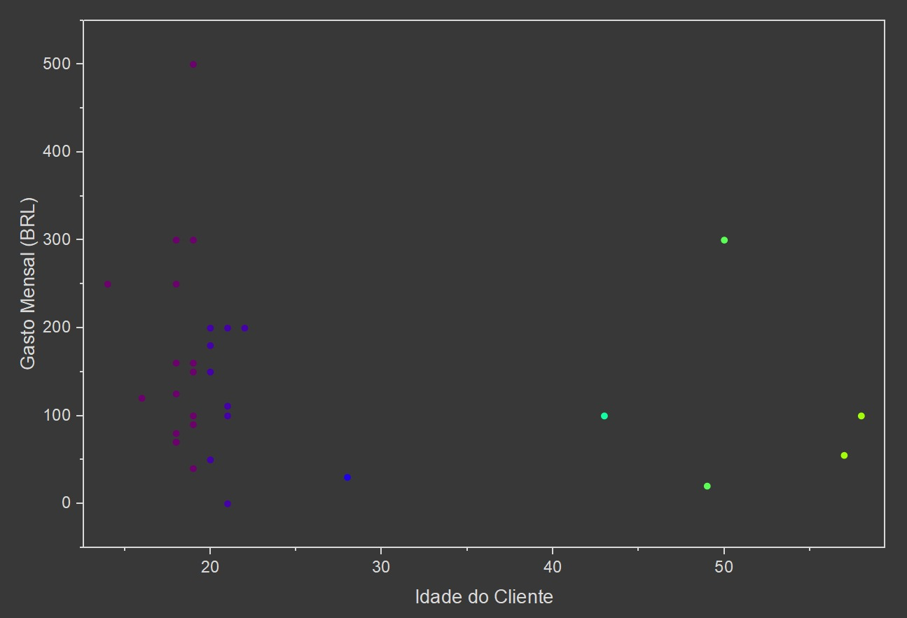
Gráfico 1: Gasto e Idade do Cliente.
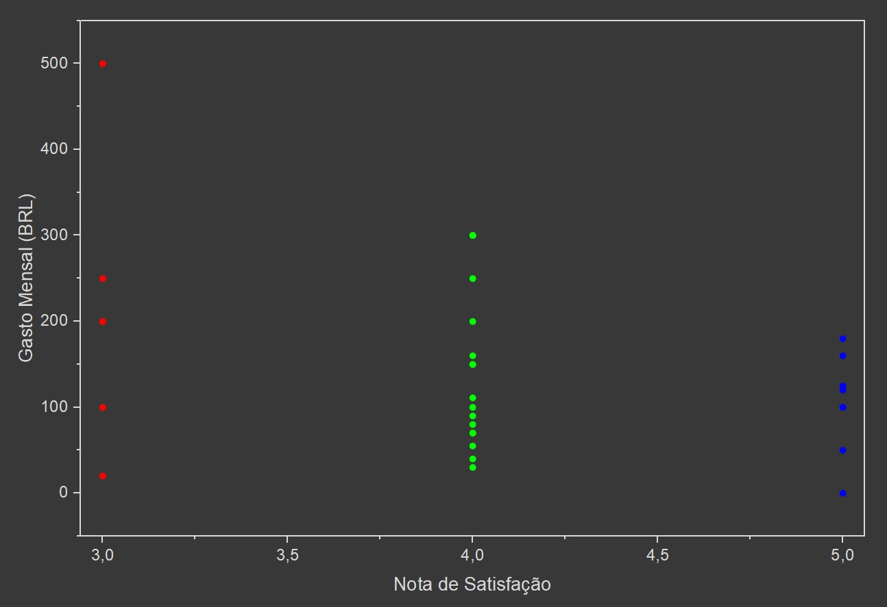
Gráfico 2: Satisfação e Gasto.
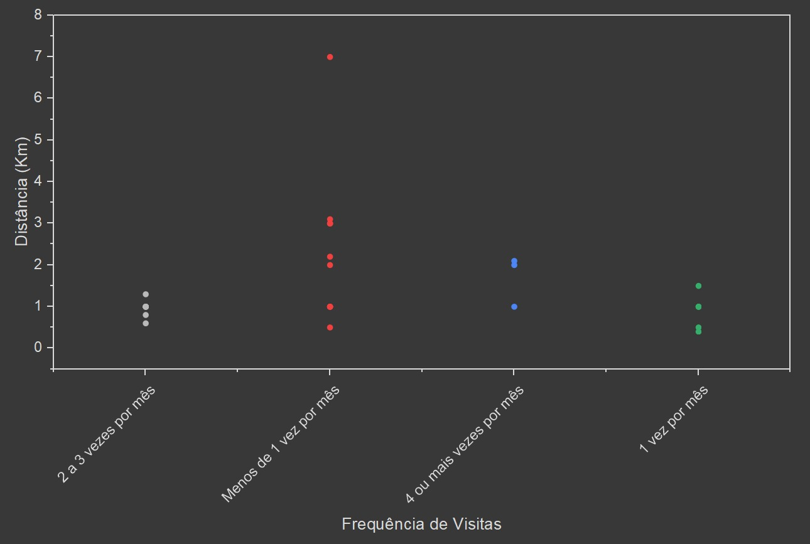
Gráfico 3: Distância e Frequência de Visitas.
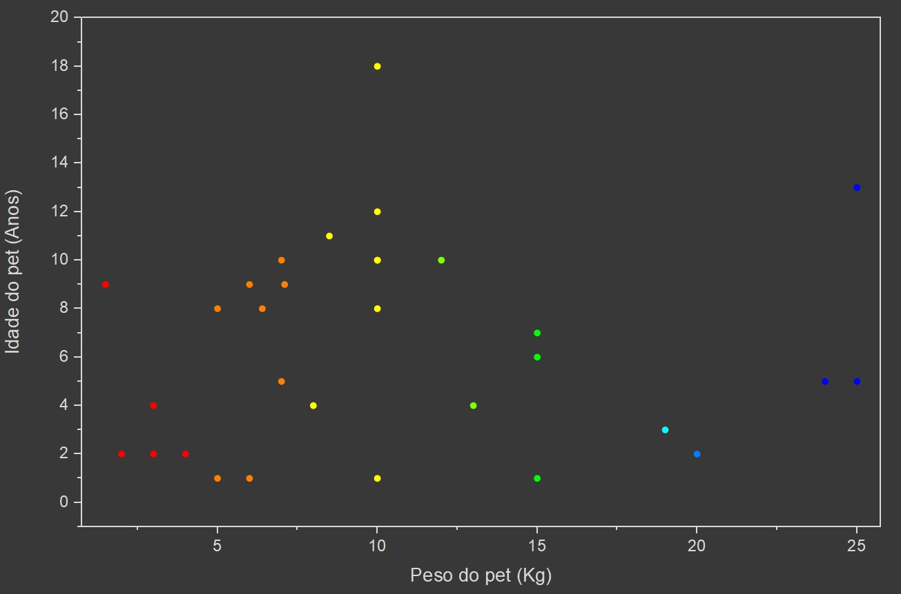
Gráfico 4: Peso e Idade do Pet.
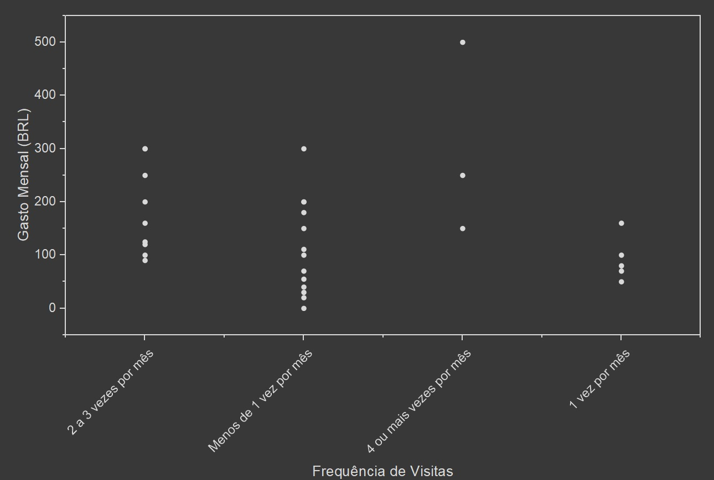
Gráfico 5: Gasto e Frequência de Visitas.
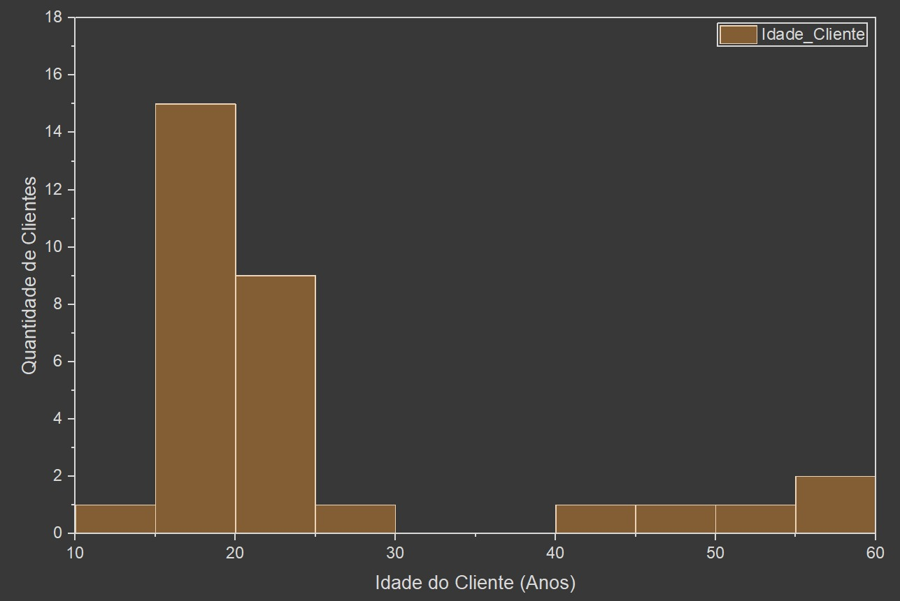
Gráfico 6: Distribuição das Idades dos Clientes (Histograma).
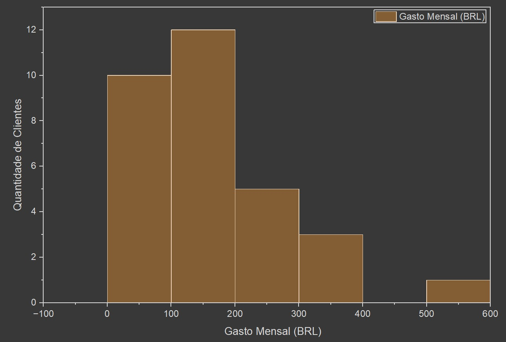
Gráfico 7: Distribuição dos Gastos Mensais (Histograma).
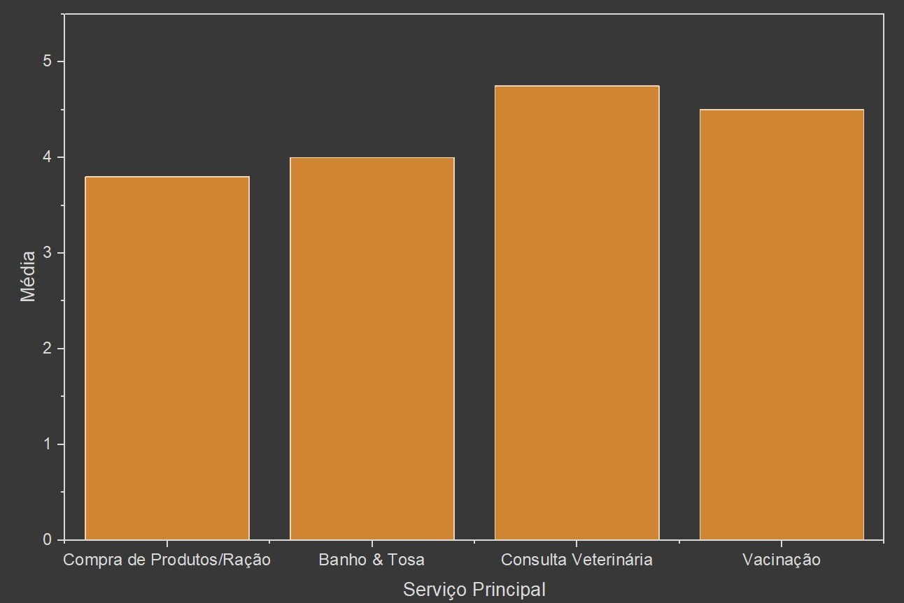
Gráfico 8: Contagem por Tipo de Pet (Gráfico de Barras).
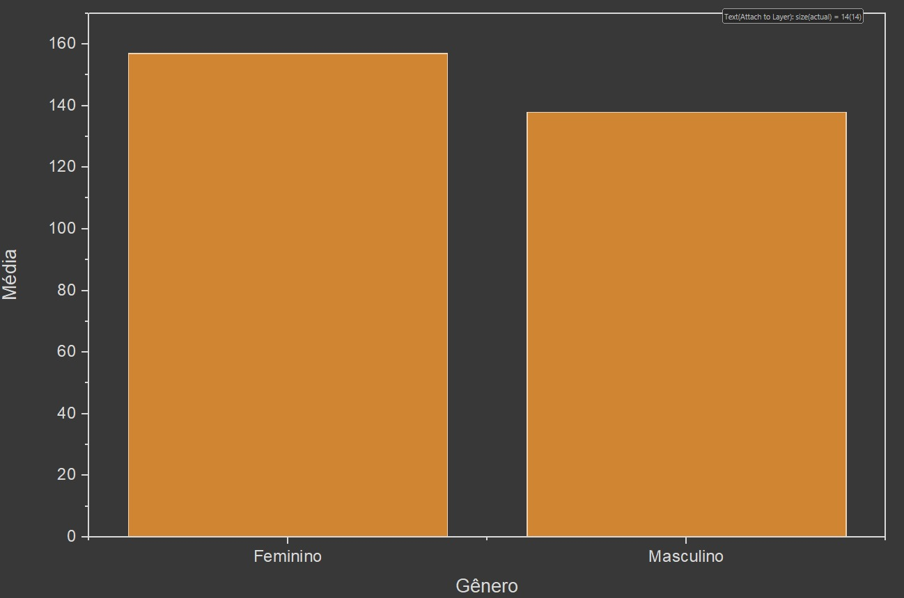
Gráfico 9: Satisfação por Serviço (Gráfico de Barras).
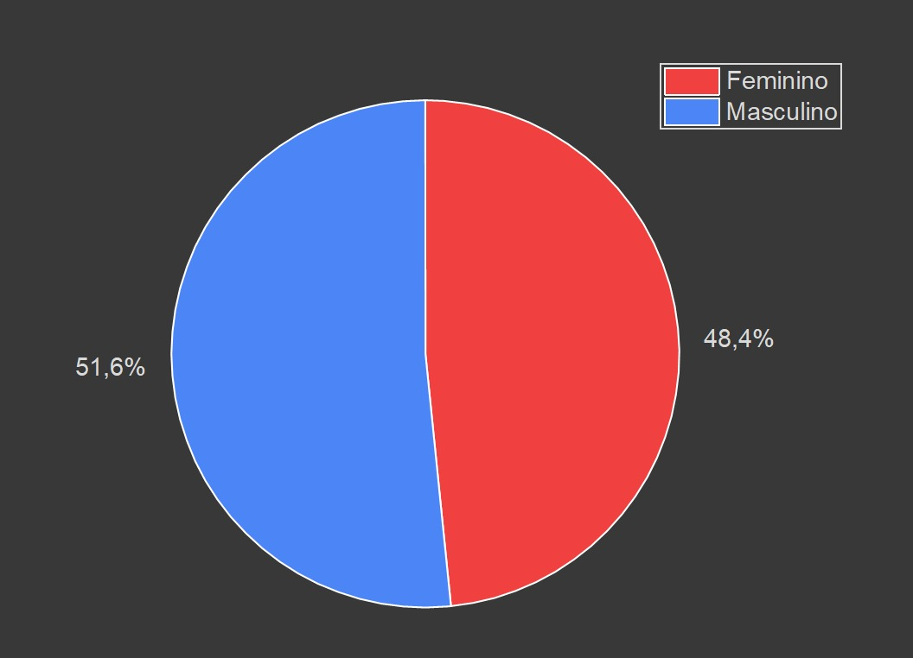
Gráfico 10: Gasto Médio por Gênero (Gráfico de Barras).
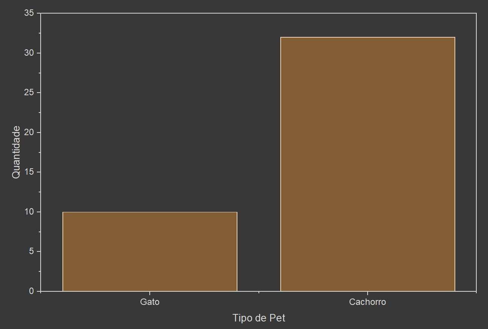
Gráfico 11: Proporção de Clientes por Gênero.
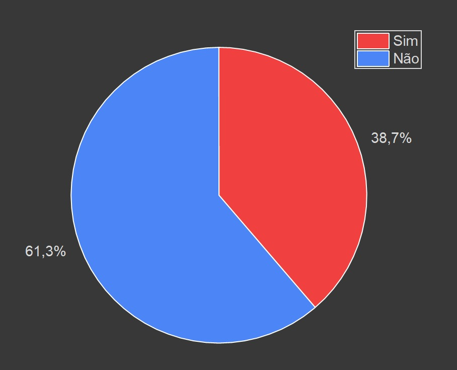
Gráfico 12: Porcentagem de Clientes com Segundo Pet.
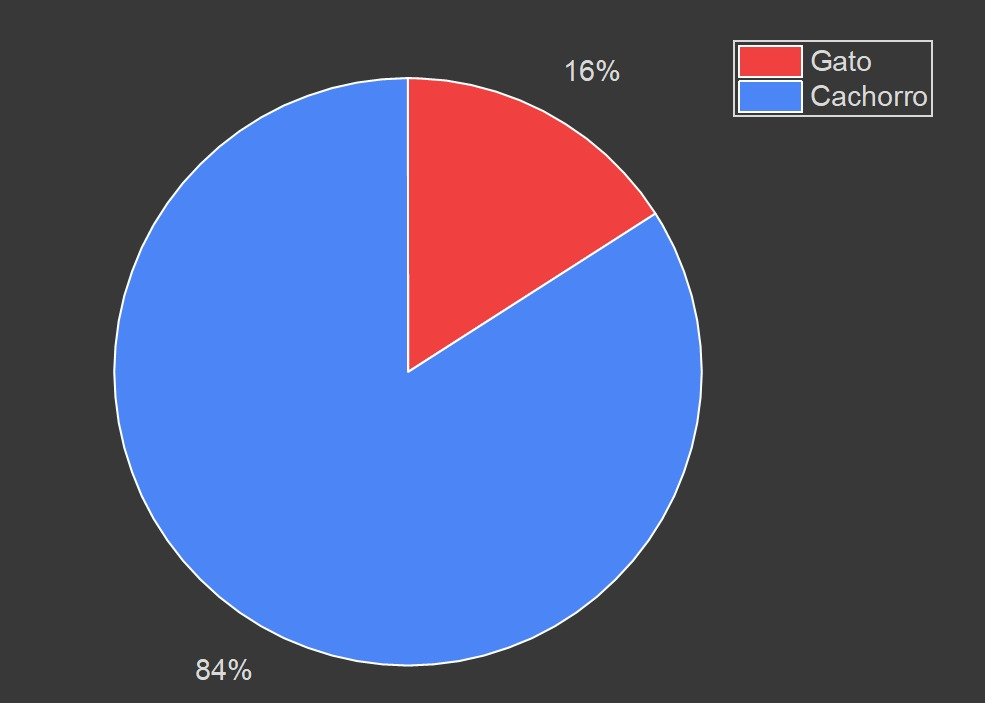
Gráfico 13: Proporção do Gasto Total por Tipo de Pet.
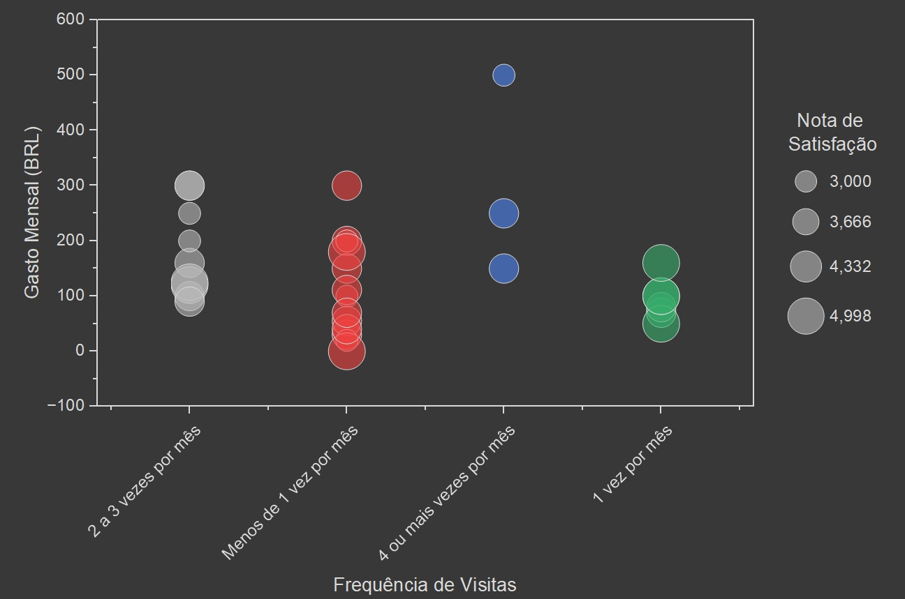
Gráfico 14: Relação entre Gasto, Frequência e Satisfação (Bubble
Chart).